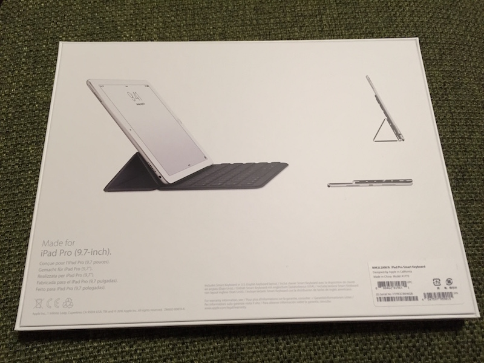
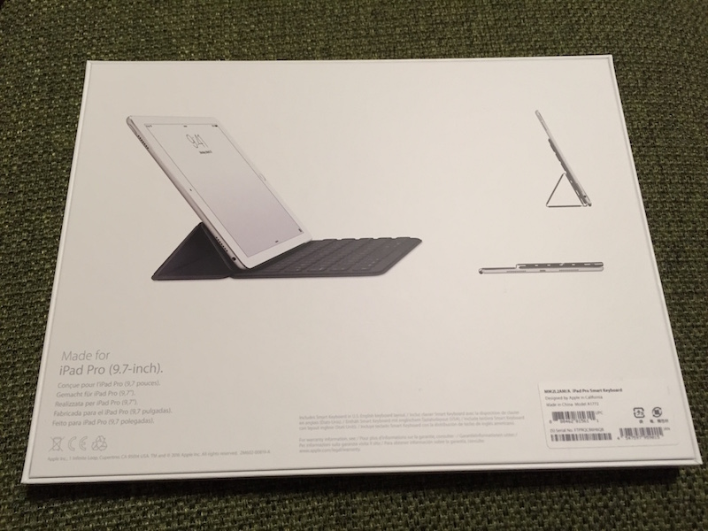

Posts in blog
iPhone のテザリングに iPlay 50 mini Pro がつながらない場合の解決方法
- 2024-05-24
iPlay 50 mini Pro NFE から iPhone のテザリングに接続しようとしたところ、iPhoneには繋がっているようだけどインターネットに接続できない、という状態だった。接続ステータスには「IP設定エラー」と表示されており、開発者オプションでWiFi詳細ログを有効にしたところ、「dhcp_failure=1」といったログが残っていたため、そのあたりで調べた。
Ablogのバージョンをアップグレード
- 2020-11-12
今まで ablog バージョンを指定して古いバージョンを使い続けていましたが、気が向いたので現行の最新バージョン（0.10.12）に更新しました。
OneMix3でCapsキーをIMEオン/オフキーに変更した
- 2019-08-15
USキーボードでは日本語・英語入力の切り替えは Alt + チルダ でできますが、 OneMix3はチルダが押しづらい位置にあるので、あまり使わないCapsキーをIMEオン・オフに変更しました。 Capsは死にますが、左手小指だけで日本語・英語の入力を切り替えられるようになって幸せです。
Travis-CIでのPythonバージョンの変更
- 2018-04-07
このブログは Ablog を使用しており、ブログを書いてgithubにpushした時に、自動的にビルドしてgithub.ioにデプロイするためにTravis-CIを使用している。
Windows10でPINコードを入力してログインしようとするとエラーが発生
- 2017-10-01

先日、所有するPCのうちの１つを工場出荷状態に戻して再セットアップしたところ、
Windowsを起動してサインイン画面でPINコードを入力しようとした時に
Server Name Indication チェックが出来ない警告ログ
- 2017-08-11
Travisのビルドログをよく見ると、「Server Name Indication (SNI) のチェックが出来ないからリンクが壊れるかも」みたいな警告が出ていた。
ablog build でまたしてもエラー
- 2017-08-10
Travis でまたしてもビルドエラーになってしまった。 前回のエラー ではSphinxのバージョンを変更して対応したが、 今回は docutils 内で発生。
Zenwatch3をAndroidに接続したらバッテリーが長持ちした
- 2017-03-11
Zenwatch3をAndroidケータイに接続して使用すると、iPhoneで使用した場合に比べて、バッテリー持続時間が大幅に向上した。
Zenwatch3のバッテリー持続時間が短い件
- 2017-02-20
先日、ASUSのZenwatch3を購入したが、買った当初バッテリーの持続時間が思った以上に悪く、 一日どころか夕方にはバッテリーがなくなりそうな状態になってしまっていた。
Windows10で一部の文字が四角（豆腐）になる問題
- 2017-02-19
先日、ASUSのT102HAを購入し、セットアップしている途中、 所々で文字が四角（いわゆる豆腐）で表示されているのに気付いた。
Githubにサインインできなくなった話
- 2016-10-28
携帯電話を機種変更したときに、 Githubの2要素認証をオンにしたまま前のケータイを初期化してしまい、 Githubにログインできなくなってしまいました。

今さらSmart Keyboardを購入した話
- 2016-09-11
 

iPad Pro 9.7を買ってから今まではキーボードにMicrosoftのUniversal Mobile Keyboardを使っていましたが、やはりキーボードとiPadと2つのデバイスを持ち歩くのが煩わしく感じてきたので、先月あたりからSmartKeyboardが欲しくなってきました。


ABlogを使ってSphinxでブログを書いてみる
- 2016-05-15
Sphinxでブログを書いてみたいと思い、Googleで検索したら ABlog for Sphinx というのが見つかったので、使ってみる。